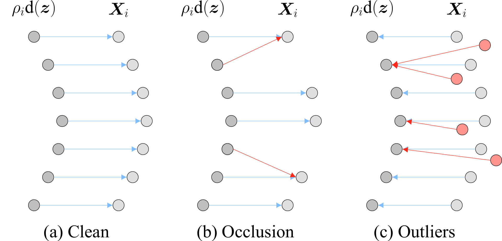

Multiview registration
of highly degraded point clouds
of highly degraded point clouds
of highly degraded point clouds
CSI 2ème année - Luc Vedrenne
Encadré par Denis Fortun & Sylvain Faisan
Point Clouds
- Comes from surface sampling
- Unordered set of cartesian coordinates : $$ x \in \mathbb{R}^{k \times 3}$$
-
Applications
- Autonomous driving
- Robotics
- Microscopy
Multiview registration
1. Rigid motion
Rigid motion $=$ affine map $\,\rho\,$ of $\,\mathbb{R^3}\,$: $$ \rho x = Rx + t$$
$\rho \in SE(3)$, $\quad R$ rotation matrix $\in S0(3)$, $\quad t$ translation vector $\in \mathbb{R^3}$
2. Pairwise Rigid Registration
Find the rigid motion that best align two points clouds $x$ and $y$
$$ \rho^{\star} = \underset{\rho}{\text{argmin}}\, \lVert \rho x - y \rVert $$
3. Multiview extension
- Set of $N$ point clouds
- Find $N$ rigid motions aligning the $N$ point clouds
pad
pad
Two approaches
Two approaches
1. All pairwise registration, then motion synchronization
- bad scaling with number of views: $\,\mathcal{O}(N^2)$
- requires robustness to failed pairwise registrations
Two approaches
2. Generative modeling
- better scaling with number of views: $\,\mathcal{O}(N)$
- robustness
- harder optimization problem
- typically : EM-GMM
Degradations
Reference
Anisotropic noise
Partial visibility
Outliers
Real data
Single Molecule Localization Microscopy
C. Franke, "Advancing Single-Molecule Localization Microscopy: Quantitative Analyses and Photometric Three-Dimensional Imaging" (2019)
Why is it hard ?
1. Local correspondences
Zhengyang Shen, Jean Feydy et al. "Accurate Point Cloud Registration with Robust Optimal Transport", NeurIPS 2021
- unreliable on higly degraded data
- sensitive to point density
- sensitive to repetitive patterns
2. Local convergence
2. Local convergence
2. Local convergence
POLAR : POint cloud LAtent Registration
POLAR : POint cloud LAtent Registration
Core idea
- Pretrain an autoencoder to reconstruct degraded point clouds
- Once trained, freeze it
- Registrate within its latent space
Autoencoder
$\mathcal{L} = \lVert x - x' \rVert$
Benefits of registering within the autoencoder's latent space
pad
- Generative method
- template $=$ $d(\hat{z})$ instead of GMM
- Global descriptor : no local correspondences
- point cloud discrepancy $=$ $\lVert z_1 - z_2 \rVert$
POLAR graphical model
$\mathcal{L} = \sum_i \lVert e(\textcolor{007BFF}{\hat{\rho}_i} d(\textcolor{007BFF}{\hat{z}}) ) - e(x_i) \rVert_{_{_2}}$
Taking degradations into account
$\mathcal{L} = \sum_i \lVert e(\textcolor{007BFF}{\hat{\rho}_i} d(\textcolor{007BFF}{\hat{z}}) ) - e(x_i) \rVert_{_{_2}}$
- $d(\hat{z})$ should be a clean object
- $z_i = e(x_i)$ are latent vectors of degraded object
$\mathcal{L} = \sum_i \lVert e(\hat{\rho}_i d(\hat{z}) ) - e(x_i) \rVert_{_{_2}}$
$\mathcal{L} = \sum_i \lVert e(\hat{\rho}_i d(\hat{z}) + \textcolor{red}{\varepsilon}) - e(x_i) \rVert_{_{_2}}$
$\mathcal{L} = \sum_i \lVert e(\textcolor{green}{\operatorname{M}_i^c}(\hat{\rho}_i d(\hat{z}) + \textcolor{red}{\varepsilon})) - e(x_i) \rVert_{_{_2}}$
$\mathcal{L} = \sum_i \lVert e(\textcolor{green}{\operatorname{M}_i^c}(\hat{\rho}_i d(\hat{z}) + \textcolor{red}{\varepsilon})) - e(\textcolor{blue}{\operatorname{M}_i^o}(x_i)) \rVert_{_{_2}}$
$\textcolor{red}{\text{anisotropic noise}}$
$\textcolor{green}{\text{partial visibility mask}}\hspace{40pt}\textcolor{red}{\text{anisotropic noise}}$
$\textcolor{green}{\text{partial visibility mask}}\hspace{50pt}\textcolor{red}{\text{anisotropic noise}}\hspace{30pt}\textcolor{blue}{\text{outliers mask}}\hspace{60pt}$
$\sim \mathcal{N}(0, \Sigma)$
$\sim \mathcal{N}(0, \Sigma)$
$\sim \mathcal{N}(0, \Sigma)$
Taking degradations into account
Optimization scheme
- Find plausible initializations
- Coarse exhaustive search over $SO(3)$ with fixed $\hat{z}$ and $t$
- Parallel gradient descent from each initialization

Results
| Method | Main idea | Global | Multiview | Generative |
|---|---|---|---|---|
| RPM-Net | learnable Sinkhorn | ✅ | üö´ | üö´ |
| DeepGMR | latent GMM | ✅ | üö´ | ✅ |
| JRMPC | EM-GMM | üö´ | ✅ | ✅ |
| SGHR | sparse & reliable pose graph | ✅ | ✅ | üö´ |
| POLAR | generative latent registration | ✅ | ✅ | ✅ |
| Method | $\le 45°$ | $\in [45°, 90°]$ | $\in [90°, 135]$ | $\in [135, 180]$ |
|---|---|---|---|---|
| RPM-Net | 99.83 % | 99.70 % | 99.43 % | 99.32 % |
| DeepGMR | 99.44 % | 98.11 % | 97.35 % | 98.54 % |
| JRMPC | 95.65 % | 78.97 % | 54.62 % | 35.17 % |
| SGHR | 100.0 % | 100.0 % | 100.0 % | 100.0 % |
| POLAR | 99.69 % | 99.82 % | 99.81 % | 99.91 % |
Synchronization method (RPM-Net & DeepGMR):
Yunpeng Shi and Gilad Lerman, "Message Passing Least Squares Algorithm for Rotation Averaging " (ICML 2020)
Robustness to isotropic noise
Robustness to anisotropic noise
$\varepsilon \sim \mathcal{N}(0, \Sigma = \operatorname{diag}(0.03, 0.03, 0.15))$
Robustness to partial visibility
Impact of the number of views : SGHR
Robustness to outliers
Impact of the number of views : SGHR
Robustness to points density
Uniform sampling : number of points $\in [205, 1024]$
Varying noise level per object
$\varepsilon \sim \mathcal{N}(0, \sigma)\,,\quad \sigma \sim \mathcal{U}(0.01, 0.20)$
Visual results
Anisotropic noise
Visual results
Partial visibility
Visual results
Outliers
En pratique
Perspectives
- Latent Diffusion Model
- Template & motions estimated by diffusion process within a VAE latent space
Développements open-source
- PyTorch 3d
 Streamlit ecosystem
Streamlit ecosystem
Publications
- POLAR: IEEE Image processing (pour mi-juillet)
- Particle detection based on few shot learning in 3D fluorescence microscopy, ISBI
- Optimizing failure mode analysis of dental restorative materials: balancing efficiency and accuracy, ISBI